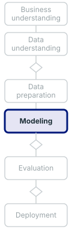

name: title layout: true class: cover --- count: false .section-mark.center[ ## Forecasting a time series ### Simple forecasts first, judged on days they have not seen <br /> Oscar Esteban <<code>oscar.esteban@hevs.ch</code>> <br /> EAD · Exploration avancée de données et intelligence décisionnelle · 23.10.2026 <div style="font-size: 0.8em; margin-top: 1.2em;"><a href="https://oesteban.github.io/msba-ead-2026-2027-slides/day2/08-forecast/index.html"> https://oesteban.github.io/msba-ead-2026-2027-slides/day2/08-forecast/index.html </a></div> ] ??? **This deck forecasts a series and judges the forecast: the simple forecasts first, every model set beside them on days it has not seen.** It follows *Reading a time series*, which ended on the last value as the benchmark every model must beat (slide 26). Slides 2 to 13 hold for any series and are shown on Capital Bikeshare's daily rentals and on drawn sketches; slides 14 to 25 forecast the Dow Jones in Dataiku. --- name: newsection layout: true .perma-sidebar[ <p class="rotate"> <a rel="license" href="http://creativecommons.org/licenses/by/4.0/"><img alt="Creative Commons License" style="border-width:0; height: 20px; padding-top: 6px;" src="https://i.creativecommons.org/l/by/4.0/88x31.png" /></a> <span style="padding-left: 10px; font-weight: 600;">Forecasting a time series (23.10.2026)</span> </p> ] --- class: vcenter # Outline .cards.steps[ .card[ .enum[1] <span class="part">Simple forecasts.</span> The mean, the last value, the same day a week before, the drift line; how often they win. Slides 2 to 3. ] .card[ .enum[2] <span class="part">Models.</span> Exponential smoothing and ETS, ARIMA, and the deep models that learn across many series. Slides 4 to 7. ] .card[ .enum[3] <span class="part">Judging a forecast.</span> Which error costs more; testing on the future; leakage in time; errors in units, in percent and scaled; the ±. Slides 8 to 13. ] .card[ .enum[4] <span class="part">Hands-on 7: forecasting the Dow Jones.</span> The treasury team's question, missing days, the session in Dataiku; the scores, the orders, the casual riders; what the team is told. Slides 14 to 25. ] ] ??? **Four parts: the simple forecasts, the models, how a forecast is judged, then a hands-on that forecasts the Dow Jones.** Parts 1 to 3 hold for any series: the textbook's four benchmarks (Hyndman & Athanasopoulos, 2021, section 5.2), exponential smoothing and ARIMA (chapters 8 and 9), the deep models, then the measures and time-ordered tests (sections 5.8 and 5.10). Part 4 asks whether any model beats the last close of the Dow Jones, then runs the same session on casual bike riders. --- class: stepwise-svg, vcenter # Four simple forecasts .fullw[ <div class="step-1"><object type="image/svg+xml" data="images/simple.svg" style="width: 100%; max-height: 400px; display: block; margin: 0 auto; pointer-events: none;" aria-label="Six weeks of daily bike rentals and four forecasts of the next two weeks: the mean of every day so far, the last value, the same day a week before, and the drift line"></object></div> .step-5.lead.big.center[Four forecasts that fit nothing: the mean, the last value, the same day a week before, the drift line.] ] .footnote[R. J. Hyndman and G. Athanasopoulos (2021), section 5.2. Data: H. Fanaee-T (2013), Capital Bikeshare, UCI dataset 275, .lic[CC BY 4.0].] ??? **Four forecasts fit nothing: the mean, the last value, the same day a week before, and the drift line.** Each rule runs two weeks past 30 April 2011: the mean of every day since 1 January, 2,044 rentals; the last value, 5,312, the naive forecast; the same weekday a week before, the seasonal naive; the line from the first day to the last, extended (Hyndman & Athanasopoulos, 2021, section 5.2). They are "extremely simple and surprisingly effective" (Hyndman & Athanasopoulos, 2021, section 5.2, verbatim); slide 3 shows how often they win. --- class: vcenter # Hard to beat .fullw[ <div class="trio"> <div><b class="k">Monthly series</b>On 1,045 series of the M3 competition, the last value adjusted for the season beat <span class="num">half</span> the machine learning methods.</div> <div><b class="k">100,000 series</b>In the M4 competition, <span class="num">one</span> of five machine learning entries beat that benchmark.</div> <div class="lit"><b class="k">Stocks and exchange rates</b><span class="num">None</span> of eight models, statistical or machine learning, beat the last value.</div> </div> .lead.big.center[A model that does not beat them is not worth considering.] ] .footnote[S. Makridakis et al. (2018), section 4; S. Makridakis et al. (2020), section 4.1; N. Beck et al. (2025), section 5; R. J. Hyndman and G. Athanasopoulos (2021), section 5.2.] ??? **A model that does not beat the simple forecasts is not worth considering, and they are hard to beat.** The textbook's rule: "If not, the new method is not worth considering" (Hyndman & Athanasopoulos, 2021, section 5.2, verbatim). Naive 2, the last value adjusted for the season, beat half the machine learning methods on 1,045 monthly M3 series (Makridakis et al., 2018, section 4); in M4, one machine learning entry of five beat it (Makridakis et al., 2020, section 4.1). On daily dollar exchange rates and minute-by-minute NASDAQ100 prices, "None of the models outperformed the naive forecast in either application" (Beck et al., 2025, section 5, verbatim). --- class: stepwise-svg, vcenter # Exponential smoothing .fullw[ <div class="step-1"><object type="image/svg+xml" data="images/weights.svg" style="width: 100%; max-height: 400px; display: block; margin: 0 auto; pointer-events: none;" aria-label="The weights of the last twelve days for alpha 0.8 and 0.2: they fall with age, faster for the larger alpha"></object></div> .step-4.lead.big.center[A weighted average whose weights fall with age: at α = 1 the last value, near 0 the mean.] ] .footnote[R. J. Hyndman and G. Athanasopoulos (2021), section 8.1.] ??? **Exponential smoothing is a weighted average whose weights fall with age: at α = 1 it is the last value, near 0 the mean.** It weights the past "with the weights decaying exponentially as the observations get older" (Hyndman & Athanasopoulos, 2021, chapter 8, verbatim). The bars, for α = 0.8 and 0.2, are computed, not fitted: each day back multiplies the weight by 1 - α. At α = 1 "the forecasts are equal to the naïve forecasts" (Hyndman & Athanasopoulos, 2021, section 8.1, verbatim); a small α weights the distant past more, towards the mean (section 8.1). --- class: stepwise-svg, vcenter # ETS .fullw[ <div class="step-1"><object type="image/svg+xml" data="images/ets.svg" style="width: 100%; max-height: 400px; display: block; margin: 0 auto; pointer-events: none;" aria-label="Three exponential smoothing forms on the same rentals: a flat forecast, a forecast with a trend, and one with a trend and a weekly season"></object></div> .step-4.lead.big.center[ETS names how its error, trend and season enter the forecast; a criterion picks the form.] ] .footnote[R. J. Hyndman and G. Athanasopoulos (2021), sections 8.4 to 8.6; R. J. Hyndman et al. (2002). Data: H. Fanaee-T (2013), UCI dataset 275, .lic[CC BY 4.0].] ??? **ETS names how its error, trend and season enter the forecast, and a criterion picks the form.** The error is A, additive, or M, multiplicative; the trend N, none, A or damped; the season N, A or M (Hyndman & Athanasopoulos, 2021, section 8.5). ETS(A,N,N) is slide 4's smoothing; the panels, fitted to the same rentals, add a trend, then a weekly season. Choosing the form by the lowest Akaike information criterion (AIC) was about as accurate as the best methods of the M and M3 competitions, "particularly good for short forecast horizons with seasonal data" (Hyndman et al., 2002, abstract, verbatim). --- class: stepwise-svg, vcenter # ARIMA .fullw[ <div class="step-1"><object type="image/svg+xml" data="images/arima.svg" style="width: 100%; max-height: 400px; display: block; margin: 0 auto; pointer-events: none;" aria-label="ARIMA's three parts, past values, differences and past errors; ARIMA(0,1,0) is the random walk; AutoARIMA searches the orders"></object></div> .step-4.lead.big.center[ARIMA models what stays autocorrelated after differencing; one difference and nothing else is the random walk.] ] .footnote[R. J. Hyndman and G. Athanasopoulos (2021), sections 9.5 to 9.7 and table 9.1; R. J. Hyndman and Y. Khandakar (2008).] ??? **ARIMA models what stays autocorrelated after differencing; with one difference and nothing else, it is the random walk.** Where exponential smoothing describes trend and season, "ARIMA models aim to describe the autocorrelations in the data" (Hyndman & Athanasopoulos, 2021, chapter 9, verbatim). ARIMA(p,d,q) holds p past values, d differences and q past errors (section 9.5); ARIMA(0,1,0) without constant is the random walk (table 9.1), forecast by its last value (section 9.1). An automatic search picks d by unit-root tests, then p and q by the lowest corrected AIC, AICc (section 9.7; Hyndman & Khandakar, 2008, section 3). --- class: stepwise-svg, vcenter # Deep models .fullw[ <div class="step-1"><object type="image/svg+xml" data="images/global.svg" style="width: 100%; max-height: 400px; display: block; margin: 0 auto; pointer-events: none;" aria-label="A sketch: many related series feed one network; one series alone gives the network nothing to share"></object></div> .step-3.lead.big.center[Deep models learn one network across many related series; one series gives them nothing to share.] ] .footnote[Dataiku DSS 13 documentation, time series forecasting; D. Salinas et al. (2020); S. Makridakis et al. (2023). A sketch.] ??? **Deep models learn one network across many related series; a single series gives them nothing to share.** For Dataiku's deep learning algorithms, "a single model is trained on all time series simultaneously" (Dataiku, 2024, verbatim); the statistical ones fit one model per series. DeepAR learns such a global model from many related series, such as a retailer's products (Salinas et al., 2020, section 1). On M3, combinations of deep models beat most other methods, at about 15 more days of computing for a 10% cut in error (Makridakis et al., 2023, abstract and section 5). The figure is a sketch. --- class: vcenter # Which error costs more .fullw[ <div class="duo big"> <div><b class="k">Mean absolute error</b>When every rental missed costs the same. The forecast that minimises it is the median.</div> <div class="lit"><b class="k">Root mean squared error</b>When one large miss costs more than several small ones. The forecast that minimises it is the mean.</div> </div> .lead.big.center[The measure decides which forecast wins: absolute error aims at the median, squared error at the mean.] ] .footnote[R. J. Hyndman and G. Athanasopoulos (2021), section 5.8.] ??? **Which error costs more decides the measure, and the measure decides which forecast wins: absolute error aims at the median, squared error at the mean.** If every rental missed costs the same, a ride lost at an empty station, the mean absolute error (MAE) fits; if one large miss costs more than several small ones, at rush hour, the root mean squared error (RMSE) does. "A forecast method that minimises the MAE will lead to forecasts of the median" (Hyndman & Athanasopoulos, 2021, section 5.8, verbatim); minimising the RMSE leads to the mean (section 5.8). --- class: stepwise-svg, vcenter # Test on the future .fullw[ <div class="step-1"><object type="image/svg+xml" data="images/rolling.svg" style="width: 100%; max-height: 400px; display: block; margin: 0 auto; pointer-events: none;" aria-label="Folds in time: each trains on all the days before its test set and tests on the next horizon; Dataiku steps back one horizon at a time"></object></div> .step-3.lead.big.center[Train on the past, test on the next horizon, from several origins.] ] .footnote[R. J. Hyndman and G. Athanasopoulos (2021), section 5.10; L. J. Tashman (2000); Dataiku DSS 13 documentation, K-fold cross-test.] ??? **Test on the future only: train on the past, test on the next horizon, and repeat from several origins.** This is "evaluation on a rolling forecasting origin" (Hyndman & Athanasopoulos, 2021, section 5.10, verbatim); it keeps the order that *Reading a time series* (slide 4) called the data and the shuffled folds of *Model selection and cross-validation* (slide 5) broke. One origin is "susceptible to corruption by occurrences unique to that origin" (Tashman, 2000, section 3.1, verbatim). Dataiku's K-fold cross-test tests the last horizon first, then one horizon earlier per fold (Dataiku, 2024); the lab's fold offset adds a horizon between tests. --- class: stepwise-svg, vcenter # Leakage in time .fullw[ <div class="step-1"><object type="image/svg+xml" data="images/leak.svg" style="width: 100%; max-height: 400px; display: block; margin: 0 auto; pointer-events: none;" aria-label="A sketch: a seven-day average at the last training day reads three test days"></object></div> .step-4.lead.big.center[Filling, smoothing or scaling the whole series before the split carries the test days into training.] ] .footnote[H. Hewamalage et al. (2023), section 3.4. A sketch.] ??? **Filling, smoothing or scaling the whole series before the split carries the test days into training.** In the sketch, drawn, not data, a seven-day average for day 27, the last training day, reads three test days. Smoothing, decomposition or normalisation of the whole series leaks so, and in forecasting leakage "can happen easier and can be harder to avoid" (Hewamalage et al., 2023, section 3.4, verbatim); a line drawn across a gap borrows the next value the same way (slide 15). It is day 1's leakage (*Beyond binary classification*, slide 15) in time: each step is fitted on each fold's training days only (section 3.4). --- class: stepwise-svg, vcenter # Errors in units and percent .fullw[ <div class="step-1"><object type="image/svg+xml" data="images/mape.svg" style="width: 100%; max-height: 400px; display: block; margin: 0 auto; pointer-events: none;" aria-label="The week of 28 October 2012: rentals fell to 22 on the 29th; the last value's errors in rentals and in percent, MAPE above 5,000%"></object></div> .step-4.lead.big.center[MAE and RMSE count rentals; MAPE divides by each day's rentals and explodes near zero.] ] .footnote[R. J. Hyndman and G. Athanasopoulos (2021), section 5.8. Data: H. Fanaee-T (2013), UCI dataset 275, .lic[CC BY 4.0].] ??? **MAE and RMSE count in rentals; MAPE divides by each day's rentals and explodes near zero.** The last value of 27 October 2012, 7,852, misses the week of Hurricane Sandy (Fanaee-T & Gama, 2013, Table 4) by 3,836 rentals a day as MAE, 4,449 as RMSE. On the 29th, 22 rentals make the error 35,591%, and the week's mean absolute percentage error (MAPE) 5,206%: percentage errors are infinite or undefined at zero and extreme near it (Hyndman & Athanasopoulos, 2021, section 5.8). Errors in rentals "cannot be used to make comparisons between series that involve different units" (Hyndman & Athanasopoulos, 2021, section 5.8, verbatim). --- class: stepwise-svg, vcenter # MASE .fullw[ <div class="step-1"><object type="image/svg+xml" data="images/mase.svg" style="width: 100%; max-height: 400px; display: block; margin: 0 auto; pointer-events: none;" aria-label="The scale: the mean change from one day to the next in training, 709 rentals; the hurricane week's error divided by it, MASE 5.41"></object></div> .step-4.lead.big.center[MASE divides the error by the last value's one-step error in training: below 1 beats that.] ] .footnote[R. J. Hyndman and A. B. Koehler (2006), section 3; R. J. Hyndman and G. Athanasopoulos (2021), section 5.8.] ??? **MASE divides the error by the last value's one-step error in training: below 1 beats that.** The scale is the mean absolute change between consecutive days over the 665 changes in training to 27 October 2012: 709 rentals. The hurricane week's MAE, 3,836, over 709 gives a mean absolute scaled error (MASE) of 5.41; below 1, a forecast beats the last value's average one-step miss (Hyndman & Koehler, 2006, section 3). A week ahead is set against one day ahead, so "the scaled errors for multi-step forecasts are typically larger than one" (Hyndman & Koehler, 2006, section 4, verbatim). --- class: stepwise-svg, vcenter # The ± .fullw[ <div class="step-1"><object type="image/svg+xml" data="images/spread.svg" style="width: 100%; max-height: 400px; display: block; margin: 0 auto; pointer-events: none;" aria-label="A sketch: two forecasts whose means and ± bars overlap, yet one is lower on 8 folds of 10"></object></div> .step-3.lead.big.center[The ± is twice the spread of the fold scores, not a precision: compare models fold by fold.] ] .footnote[Dataiku DSS 13 documentation, K-fold cross-test; S. J. Taylor and B. Letham (2018), section 4.3. A sketch.] ??? **The ± is twice the spread of the fold scores, not a precision: compare models fold by fold, on the same folds.** Dataiku's error margins are "twice the standard deviation over the K estimations" (Dataiku, 2024, verbatim), the ± of *Model selection and cross-validation* (slide 6). Time-ordered folds share most of their training days, and "the more simulated forecasts we make, the more correlated their estimates of error are" (Taylor & Letham, 2018, section 4.3, verbatim). In the sketch, drawn, not data, the bars of A and B overlap, yet on the same folds B is lower 8 times in 10. --- class: vcenter # The case <img class="phase-thumb" src="images/phase-bu.svg" alt="The CRISP-DM phases, business understanding lit" /> .beside-thumb[ <div class="duo big"> <div><b class="k">The decision</b>A treasury team buys an index fund once a month, on a day of its choosing.</div> <div class="lit"><b class="k">The question</b>Next week's closes: does any model forecast them better than the last close? The horizon: seven days.</div> </div> .lead.big.center[A model earns its place only if it beats the last value on the same days.] ] .footnote[A scenario, not data.] ??? **The treasury team asks for next week's closes; a model earns its place only if it beats the last value on the same days.** The team, a scenario as in *Reading a time series*, now looks seven days ahead; that deck ended on the last value as the benchmark (slide 26 there). On stock market data, close to a random walk, the naive forecast is that benchmark: "without comparing against it, quality of more complex models cannot be meaningfully assessed" (Hewamalage et al., 2023, section 3.2, verbatim). --- class: stepwise-svg, vcenter # Missing days <img class="phase-thumb" src="images/phase-dp.svg" alt="The CRISP-DM phases, data preparation lit" /> .beside-thumb[ <div class="step-1"><object type="image/svg+xml" data="images/fill.svg" style="width: 100%; max-height: 400px; display: block; margin: 0 auto; pointer-events: none;" aria-label="A sketch of a weekend without closes: the previous value repeats Friday's close; a line would borrow Monday's"></object></div> .step-4.lead.big.center[A one-day step fills 117 of the 373 days: repeat the last close, never draw a line to the next one.] ] .footnote[Dataiku DSS 13 documentation, time series forecasting; counts on the course file. A sketch.] ??? **A one-day step fills 117 of the file's 373 days: repeat the last close, never draw a line to the next one.** The 117 are the weekends and 11 market holidays. Dataiku needs equally spaced steps and imputes the missing ones, linearly or "same as previous" among others, with no business-day step documented (Dataiku, 2024). A line across a weekend borrows Monday's close, unknown on Saturday: if the series is filled before the folds are cut, a training set ending on a Sunday holds a test value, slide 10's leakage (Hewamalage et al., 2023, section 3.4). --- class: stepwise-svg, vcenter # In Dataiku <p></p> .beside-thumb[ <div class="step-1"><object type="image/svg+xml" data="images/dss-forecast.svg" style="width: 100%; max-height: 400px; display: block; margin: 0 auto; pointer-events: none;" aria-label="A drawing of the forecasting session's settings: time step one day, horizon seven, previous value, ten folds with an offset, MASE"></object></div> .step-4.lead.big.center[One session: a day's step filled with the previous value, seven days ahead, ten time-ordered folds, MASE.] ] .footnote[Drawn after the Dataiku DSS 13 documentation and the 2025 course server; the server's labels take precedence.] ??? **A forecasting session: one-day steps filled with the previous value, seven days ahead, ten time-ordered folds, scored by MASE.** The panel is drawn after the DSS 13 documentation and the 2025 server's screens; the course server's labels take precedence. K-fold cross-test takes the last horizon as a test set, then shifts it back one horizon at a time until there are K folds, each trained on all the days before; its ± is twice the standard deviation over the folds (Dataiku, 2024). Fold offset is ticked, as on the 2025 server. --- class: vcenter # The algorithms .beside-thumb[ <div class="types"> <div><b>Trivial identity</b><p>The last value, for every day ahead: the naive forecast. A baseline; nothing is fitted.</p></div> <div><b>Seasonal naive</b><p>The same day a week before, with a season length of 7. A baseline.</p></div> <div><b>AutoARIMA</b><p>The differences, then the orders with the lowest AICc, searched by itself.</p></div> <div><b>ETS</b><p>An additive or multiplicative error; a trend and a season, each none, additive or multiplicative.</p></div> </div> <p class="types-after">The baselines train first: every model is read beside Trivial identity, on the same folds.</p> ] .footnote[Dataiku DSS 13 documentation, time series forecasting; ETS as on the 2025 course server.] ??? **The baselines first, Trivial identity and Seasonal naive, then AutoARIMA and ETS, each read beside Trivial identity.** For DSS's baselines "no parameters are learned" (Dataiku, 2024, verbatim). An automatic ARIMA search sets the differences by unit-root tests, then the other orders by the lowest AICc (Hyndman & Athanasopoulos, 2021, section 9.7); ETS picks its form by the AICc too (section 8.6). ETS is missing from the captured DSS 13 page but was on the 2025 server. Each model is read beside Trivial identity, fold by fold (slide 13). --- class: vcenter # Hands-on 7: does any model beat the last value? <img class="phase-thumb" src="images/phase-mo-ev.svg" alt="The CRISP-DM phases, modeling and evaluation lit" style="top: 170px;" /> .beside-thumb[ .need[**The need.** A treasury team asks for next week's Dow Jones closes, and whether any model forecasts them better than the last close. The data: the dated close of Hands-on 6.] <div class="moves"> <div><b>1. Set up</b>The session on the close: step, filling, horizon, folds, metric.<br /><code>Lab → Time Series Forecasting</code>; step 1</div> <div><b>2. Baselines</b>Trivial identity and Seasonal naive, trained first.<br /><code>Algorithms</code>, <code>Train</code>; step 2</div> <div><b>3. Models</b>AutoARIMA and ETS, each beside Trivial identity.<br /><code>Algorithms</code>, <code>Train</code>; step 3</div> <div><b>4. Orders</b>What AutoARIMA chose.<br /><code>Model information → ARIMA orders</code>; step 3</div> </div> .admonition.question.near[ <i class="fa-solid fa-circle-question"></i> **Does any model beat Trivial identity by more than its ±?** ] .time[Sheet *Hands-on 7*, steps 1 to 3. Groups of three. 25 minutes.] ] .footnote[Steps as on the sheet.] ??? **In the 25 minutes of the core, groups set up a forecasting session on the close, train the baselines, then the models, and read each beside Trivial identity.** Step 1 opens **Lab → Time Series Forecasting** on the dated close of Hands-on 6 and sets slide 16's session: a one-day step, the previous value for missing days, horizon 7, K-fold cross-test with 10 folds and a fold offset, MASE. Step 2 trains Trivial identity and Seasonal naive; step 3 adds AutoARIMA and ETS, and reads the orders under **Model information → ARIMA orders**. --- class: vcenter # Hands-on 7, continued <img class="phase-thumb" src="images/phase-mo-ev.svg" alt="The CRISP-DM phases, modeling and evaluation lit" /> .beside-thumb[ <div class="moves"> <div><b>5. Casual riders</b>The same session on <code>Casual</code>, the bike rentals.<br /><code>Lab → Time Series Forecasting</code>; panel 4</div> <div><b>6. Baselines</b>Trivial identity and Seasonal naive.<br /><code>Train</code>; panel 4</div> <div><b>7. ETS</b>Beside the two baselines.<br /><code>Train</code>; panel 4</div> <div><b>8. Decide</b>What the treasury team is told.<br />Panel 5</div> </div> .admonition.question.near[ <i class="fa-solid fa-circle-question"></i> **Where does a model beat the last value: on the index, or on the riders?** ] .time[Sheet panels 4 and 5. 10 minutes.] ] .footnote[Data: H. Fanaee-T (2013), Capital Bikeshare, UCI dataset 275, .lic[CC BY 4.0].] ??? **In 10 more minutes, in panels 4 and 5, groups run the same session on the casual riders, then write what the treasury team is told.** Panel 4 opens a new session on `Casual` of `bike-rentals.csv`, with the same settings, and trains Trivial identity, Seasonal naive and ETS. Casual riders ride most at weekends, 1,465 on an average Saturday against 551 on a Wednesday (*Reading a time series*, slide 7; Fanaee-T, 2013): a weekly season, beside an index that showed none. Panel 5 writes the decision; slides 20 to 25 read the results. --- class: stepwise-svg, vcenter # Reading the scores <img class="phase-thumb" src="images/phase-ev.svg" alt="The CRISP-DM phases, evaluation lit" /> .beside-thumb[ <div class="step-1"><object type="image/svg+xml" data="images/dj-scores.svg" style="width: 100%; max-height: 400px; display: block; margin: 0 auto; pointer-events: none;" aria-label="MASE of four forecasts of the Dow Jones close over ten folds: the last value 1.68, ETS the same, the seasonal naive and ARIMA higher, every spread overlapping"></object></div> .step-3.lead.big.center[On the index, no model beats Trivial identity beyond the spread.] ] .footnote[Computed on the course file with Dataiku's fold layout (statsmodels); statistics only. The server's scores are read in class.] ??? **On the index, no model beats Trivial identity beyond the spread.** The last value scores a MASE of 1.68 (± 2.36), above 1: a week ahead errs more than a day ahead (Hyndman & Athanasopoulos, 2021, section 5.10). ETS chose (A,N,N), simple exponential smoothing, on every fold and ties: its 6 wins are hair-thin, the two agreeing to two decimals on 7 folds of 10. The seasonal naive (2.40) and ARIMA (1.90) win 2 folds each. Computed with statsmodels on the course file, not by Dataiku; the server's scores are read in class. --- class: stepwise-svg, vcenter # The chart deceives <img class="phase-thumb" src="images/phase-ev.svg" alt="The CRISP-DM phases, evaluation lit" /> .beside-thumb[ <div class="step-1"><object type="image/svg+xml" data="images/trail.svg" style="width: 100%; max-height: 400px; display: block; margin: 0 auto; pointer-events: none;" aria-label="A simulated random walk and its forecast, the day before's value: on the chart they almost overlap; close up, the forecast is one day late"></object></div> .step-4.lead.big.center[A forecast one day late hugs the series on a chart; the scores decide.] ] .footnote[H. Hewamalage et al. (2023), section 3.3. The walk is simulated.] ??? **A forecast that trails the series by a day looks convincing on a chart; the scores decide.** On a simulated walk, each day's forecast is the day before's value, one step behind. On such charts "our eyes are deceived by the smaller horizontal distances" (Hewamalage et al., 2023, section 3.3, verbatim), while the error is the vertical distance. Plots serve as a sanity check: "Decisions should mostly be made based on evaluations with error measures" (Hewamalage et al., 2023, section 3.3, verbatim), as slide 20's were. --- class: vcenter # AutoARIMA's orders <img class="phase-thumb" src="images/phase-ev.svg" alt="The CRISP-DM phases, evaluation lit" /> .beside-thumb[ <div class="duo big"> <div><b class="k">One difference, nothing else</b>Orders (0, 1, 0): the random walk, whose forecast is the last value. Trivial identity under another name.</div> <div class="lit"><b class="k">More terms</b>Where the search adds terms, the score does not improve: on the course file, ARIMA beat the last value on 2 folds of 10.</div> </div> .lead.big.center[Read the orders: one difference and nothing else is the last value under another name.] ] .footnote[R. J. Hyndman and G. Athanasopoulos (2021), table 9.1. Computed on the course file; statistics only.] ??? **Read AutoARIMA's orders: one difference and nothing else is the last value under another name.** ARIMA(0,1,0) with no constant is the random walk (Hyndman & Athanasopoulos, 2021, table 9.1). A search with statsmodels on the course file, KPSS tests for the differences, the AICc for the rest (section 9.7), chose it on 2 folds of 10, more terms on 4, and on the other 4 an AR(1) with a coefficient close to 1, nearly a random walk (section 9.3); it beat the last value on 2 folds. Dataiku's own orders are read in class. --- class: stepwise-svg, vcenter # Where a season exists <img class="phase-thumb" src="images/phase-ev.svg" alt="The CRISP-DM phases, evaluation lit" /> .beside-thumb[ <div class="step-1"><object type="image/svg+xml" data="images/casual-scores.svg" style="width: 100%; max-height: 400px; display: block; margin: 0 auto; pointer-events: none;" aria-label="MASE of three forecasts of casual riders over ten folds: the last value 1.24, the seasonal naive 0.95 and ETS 0.96, each lower on 7 folds of 10"></object></div> .step-3.lead.big.center[On the casual riders, the weekly forecasts beat the last value on 7 folds of 10.] ] .footnote[Computed on the course file with Dataiku's fold layout (statsmodels). Data: H. Fanaee-T (2013), UCI dataset 275, .lic[CC BY 4.0].] ??? **On the casual riders, whose week repeats, the weekly forecasts beat the last value on 7 folds of 10.** The seasonal naive scores 0.95 (± 0.84), ETS 0.96 (± 1.44), the last value 1.24 (± 1.27). ETS chose (M,A,M) on every fold, a season that grows with the level (*Reading a time series*, slide 8). On a seasonal series the seasonal naive is the benchmark (Hewamalage et al., 2023, section 3.2), and ETS does not beat it. Computed with statsmodels on the course file, not by Dataiku; the server's scores are read in class. --- class: vcenter # What the team is told <img class="phase-thumb" src="images/phase-ev.svg" alt="The CRISP-DM phases, evaluation lit" /> .beside-thumb[ <div class="duo big"> <div><b class="k">The forecast</b>Next week's closes: today's close, for every day.</div> <div class="lit"><b class="k">Its error</b>About 360 points a day over the week, 0.8% of the index, on the past weeks tested.</div> </div> .lead.big.center[Next week's best forecast of the close is today's close, with its typical error.] ] .footnote[Computed on the course file; statistics only.] ??? **Next week's best forecast of the close is today's close, with its typical error.** For stock market prices and indexes, "the best forecasting method is often the naïve method" (Hyndman & Athanasopoulos, 2021, section 5.4, verbatim); a flat line looks unrealistic, yet on a random walk it is the best forecast available (Hewamalage et al., 2023, section 3.3). Over the ten test weeks, the last value missed by 363.5 points a day on average, 0.82% of the index, on the course file. The forecast gives the team no reason to prefer one day. --- class: vcenter # The checklist .fullw[ <div class="six"> <div><b>1. Decision and horizon</b>Next week's closes, to choose a day.</div> <div><b>2. Components read</b>No trend to extend, no weekly season.</div> <div><b>3. Benchmark first</b>Trivial identity, trained before any model.</div> <div><b>4. Time-ordered folds</b>Ten, each tested on the week after its training days.</div> <div><b>5. Scaled error</b>MASE, read beside the last value's.</div> <div class="lit"><b>6. Nothing across the split</b>Missing days repeat the past, never the next close.</div> </div> .lead.big.center[The treasury team's forecast passed six checks before it went to the team.] ] .footnote[H. Hewamalage et al. (2023), section 8; R. J. Hyndman and G. Athanasopoulos (2021), sections 5.2 and 5.10.] ??? **The treasury team's forecast passed six checks before it reached the team.** Each card fills one check for this case: the decision and horizon (slide 14), the components read in *Reading a time series*, the benchmark first, time-ordered folds, a scaled error (slide 12), and no filling across the split (slide 15). For any forecast, "compare models against the right and the simplest benchmarks" (Hewamalage et al., 2023, section 8, verbatim), keep leakage out of preprocessing, and prefer time-ordered validation when the series is long enough (section 8). --- # References .refs.cols2[ - Beck, N., Dovern, J. and Vogl, S. (2025). Mind the naive forecast! A rigorous evaluation of forecasting models for time series with low predictability. *Applied Intelligence* 55(6):395. - Dataiku (2024). Time series forecasting. *Dataiku DSS 13 reference documentation*, doc.dataiku.com. - Fanaee-T, H. (2013). Bike Sharing [dataset]. UCI Machine Learning Repository, doi:10.24432/C5W894. - Hewamalage, H., Ackermann, K. and Bergmeir, C. (2023). Forecast evaluation for data scientists: common pitfalls and best practices. *Data Mining and Knowledge Discovery* 37(2):788 to 832. - Hyndman, R. J. and Athanasopoulos, G. (2021). *Forecasting: Principles and Practice*, 3rd ed. OTexts, Melbourne. - Hyndman, R. J. and Khandakar, Y. (2008). Automatic time series forecasting: the forecast package for R. *Journal of Statistical Software* 27(3). - Hyndman, R. J. and Koehler, A. B. (2006). Another look at measures of forecast accuracy. *International Journal of Forecasting* 22(4):679 to 688. - Hyndman, R. J., Koehler, A. B., Snyder, R. D. and Grose, S. (2002). A state space framework for automatic forecasting using exponential smoothing methods. *International Journal of Forecasting* 18(3):439 to 454. - Makridakis, S., Spiliotis, E. and Assimakopoulos, V. (2018). Statistical and machine learning forecasting methods: concerns and ways forward. *PLOS ONE* 13(3):e0194889. - Makridakis, S., Spiliotis, E. and Assimakopoulos, V. (2020). The M4 Competition: 100,000 time series and 61 forecasting methods. *International Journal of Forecasting* 36(1):54 to 74. - Makridakis, S., Spiliotis, E., Assimakopoulos, V., Semenoglou, A.-A., Mulder, G. and Nikolopoulos, K. (2023). Statistical, machine learning and deep learning forecasting methods: comparisons and ways forward. *Journal of the Operational Research Society* 74(3):840 to 859. - Salinas, D., Flunkert, V., Gasthaus, J. and Januschowski, T. (2020). DeepAR: probabilistic forecasting with autoregressive recurrent networks. *International Journal of Forecasting* 36(3):1181 to 1191. - Tashman, L. J. (2000). Out-of-sample tests of forecasting accuracy: an analysis and review. *International Journal of Forecasting* 16(4):437 to 450. - Taylor, S. J. and Letham, B. (2018). Forecasting at scale. *The American Statistician* 72(1):37 to 45. ] ??? **These are the works the deck's footnotes cite; Hyndman and Athanasopoulos (2021) is the place to start.** Their online textbook, worked in R, holds this deck's topics: the simple forecasts, the error measures and time series cross-validation in chapter 5, exponential smoothing and ETS in chapter 8, ARIMA in chapter 9. Hewamalage et al. (2023) list the pitfalls of judging a forecast; Makridakis et al. (2018, 2020, 2023) and Beck et al. (2025) set models against the simple forecasts; the others define the methods and the data. --- .section-mark[ # End .large[ Next: the group-project defences [<i class="fa-solid fa-circle-left"></i>](../07-series/index.html) [<i class="fa-solid fa-home"></i>](#1) <i class="fa-solid fa-circle-right" style="opacity: 20%"></i> ] ] ??? **Next come the group-project defences.**